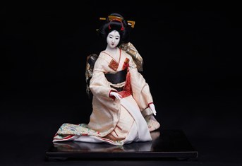

Rokudan no Shirabe (Sáu cung đàn "KOTO") là tên một bản nhạc nổi tiếng dành cho đàn koto, nhạc cụ dây truyền thống của Nhật Bản. “Rokudan” có nghĩa là “sáu đoạn”, chỉ cấu trúc gồm sáu phần của bản nhạc; “Shirabe” mang nghĩa là giai điệu hoặc âm điệu.
Búp bê này tái hiện hình ảnh người nghệ sĩ trong khoảnh khắc biểu diễn hoặc thưởng thức âm nhạc truyền thống. Dáng ngồi quỳ, khuôn mặt điềm tĩnh và bộ kimono thanh nhã tạo nên cảm giác trang trọng, sâu lắng, giống như không gian của một buổi diễn koto cổ truyền.
Tác phẩm không chỉ thể hiện vẻ đẹp của búp bê Nhật Bản mà còn gợi mở thế giới âm nhạc truyền thống, nơi âm thanh, trang phục và cử chỉ hòa quyện để tạo nên một nét đẹp rất riêng của văn hóa Nhật.
『六段の調べ』は、日本の伝統的な弦楽器である箏のための有名な楽曲です。「六段」は曲が六つの部分から成ることを、「調べ」は旋律や音色を意味します。
この人形は、伝統音楽を演奏する、あるいは鑑賞する演奏者の一瞬を表現しています。座した姿、落ち着いた表情、上品な着物が、古くからの箏の演奏会のような、厳かで奥深い雰囲気を生み出しています。
本作は日本人形の美しさを示すだけでなく、音・衣装・しぐさが一体となって独自の美を生み出す伝統音楽の世界へと、見る人を誘います。